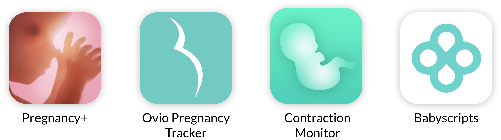
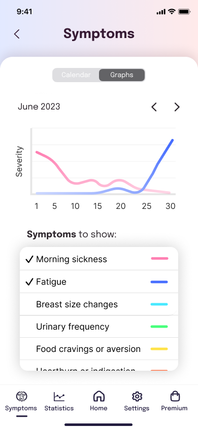
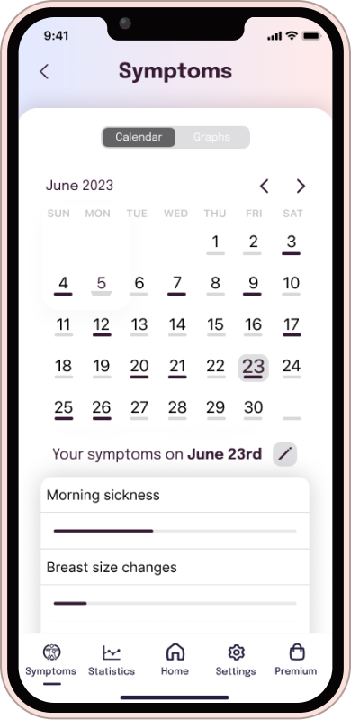

A UX/UI-Design Case Study
For a 10-hour time limited UX/UI Case Study, I was given the opportunity to redesign the design
for an outdated pregnancy symptom and contraction tracker app built in 2014. My process involved
in-depth user and usability research to identify and address key pain points within the existing
app. The result? A transformation of the app's visual style and a substantial enhancement of the
user experience.
Doula is a pregnancy app which provides
audio guidance in the final
phase of pregnancy for managing the pain during contractions. Additionally, users can view
statistics of their contractions. The app is missing a symptom tracker that expectant mothers
can use to log their symptoms and monitor changes throughout their pregnancy. Additionally, the
visual style of the app is outdated and not very engaging. Users have also reported feeling
disconnected from the app and are looking for a more personal and supportive experience.
The Original App
User Research
While my ideal approach would involve in-depth user interviews, think-aloud sessions, and data
analytics, the 10-hour time limit was the greatest rival. So, I pivoted, focusing on
understanding our audience: expectant mothers and their incredible doulas. These doula
superheroes offer emotional support, information, physical comfort, advocacy, continuous
presence, and postpartum care. I dived into uncovering what expectant mothers need during the
final phases of pregnancy, including emotional reassurance, information, comfort, advocacy,
continuous presence, and postpartum preparation. But that's not all – I delved into
understanding pregnancy symptoms, diligently cataloging the essentials that expectant mothers
often want to track, from weight gain and morning sickness to mood changes and fetal movements.
User feedback for the Doula app in the App Store and Google Play Store
paints a mixed picture. Many users express positivity, finding it comforting during labor.
However, challenges exist, including occasional freezing or crashing issues. Some appreciate the
free features, while others express frustration over in-app purchases.
“Seems a bit too basic and no general walk-through. Everything
is for purchase or "do this task to access content" nice option. The music is nice but I
wish there were better options.
”— ✩✩✩✩ - May 27, 2021
“"I both love and hate this app.i tested it before
my labour and liked the sounds so was happy to use it. However I didn't let it
run long enough so didn't test it properly. when it came to labour I was
listening to it but every time or got to the end of the audio it crashed and
closed the app which infuriated me as I was in agony."
”— ✩✩✩ - March 24, 2019
Competitor Analysis

In the world of pregnancy and labor support apps, you'll find a range of
options. Some, like the Contraction Timer & Counter and Full Term - Labor
Contraction Timer, focus solely on tracking contractions with no audio coaching
or music features. Others, such as Pregnancy+ and Ovia Pregnancy Tracker, offer
comprehensive pregnancy tracking and information but lack dedicated contraction
coaching. Additionally, there are wearable devices like Bloomlife for real-time
contraction tracking, while apps like Mama Natural Birth Course prioritize
childbirth education and natural birth support over contraction tracking.
Usability Test | Jakob Nielson's Principles of
Interaction Design
- • Visibility of System Status: The app provides clear feedback on the homescreen
but
lacks
loading indicators in
certain areas, potentially causing confusion.
-
• Match Between System and the Real World: The app effectively uses familiar
language and
concepts, avoiding
confusing jargon.
- • User Control and Freedom: Users may encounter challenges in undoing actions,
with a lack
of clear exit
options,
potentially leading to data loss.
- • Consistency and Standards: The app does not consistently follow established
OS
guidelines, leading to
inconsistencies in design and icon placement.
- • Error Prevention: While structurally clean, the use of fancy fonts in
instructions may
reduce readability
and
increase the chance of users skipping important information.
- • Recognition Rather Than Recall: Inconsistent icon usage and placement make it
challenging for users to
remember
information across different parts of the interface.
- • Aesthetic and Minimalist Design: The outdated and inconsistent design,
including long
instructional texts
and
color choices, hinders user experience and readability.
- • Help and Documentation: While some help is available, its effectiveness is
limited due
to other design
issues
within the app.
Screenshot
““As an expectant mother, I want to easily track
my pregnancy symptoms and monitor changes throughout my pregnancy using the
Doula app, so I can receive personalized support and feel more connected to
the app's features and content.”
”— User Story
Acceptance Criteria:
- • Given that I am using the Doula
app, when I
open the app, I should be presented with a
clear and inviting home screen.
-
• When I want to log my pregnancy
symptoms, I
can navigate to the new "Symptom Tracker"
feature from the home screen.
- • In the "Symptom Tracker," I should
see a
user-friendly interface with options to log
common symptoms such as morning sickness,
fatigue, cramping, and more.
- • Each symptom should have a
dedicated input
field for recording its severity or
frequency.
- • I should be able to add additional
notes or
comments related to each symptom if I choose
to.
- • The app should allow me to save and
date-stamp my symptom entries.
- • Once I've logged my symptoms, I can easily
access a history or log of my previous
entries for reference.


Rebranding
Updating the visual style
I overhauled the color schemes, typography, and iconography to create a visually captivating and
modern interface that resonates with the app's purpose. By employing a clean color palette with
soothing gradients and harmonious shades, I directed users' attention towards vital content. I
struck a balance between playful branding elements and professional clarity by adopting a clean
and neutral font for instructional text, aligning with iOS guidelines. Additionally, I adhered
to iOS standards for iconography, placing them in a user-friendly nav-bar at the bottom for
intuitive navigation, ensuring users always know their location within the app. Consistency
reigns supreme across screens, unifying typography, color coding, and iconography for a seamless
user journey.
Improving the
homescreen
The redesigned homescreen not only embodies Doula's new visual identity but
also offers a dynamic 'pulsing' play button, evoking the essence of
breathing techniques within Mary's instructions. Users are now greeted with
personalized messages and customizable profile pictures, making the app feel
uniquely theirs. I've introduced a handy volume control panel, allowing
users to tailor their audio experience, while a user-friendly nav-bar at the
bottom ensures quick access to the app's full functionality. To make the
symptom tracker more engaging, a notification icon encourages users to log
their daily symptoms, enhancing their overall experience. Plus, I've
incorporated a dedicated premium package screen, addressing user preferences
for a simplified payment model.
Symptom tracker feature
I introduced a user-friendly symptom tracker to the app,
enabling users to log and monitor their pregnancy
symptoms, rate their severity, and add notes. Users are
prompted to input their daily symptoms, and only the
'Save' button becomes active once at least one symptom
is selected, ensuring data accuracy. The tracker offers
a calendar view with color-coded bars for symptom
submissions and a graph displaying symptom progression
over time, enhancing users' ability to visualize their
pregnancy journey.Additionally, I added a back-button on
all non-home screens, providing users with a convenient
way to return to the home screen without data loss,
addressing a missing feature from the original app.
Figma Prototype
Links
Figma Prototype